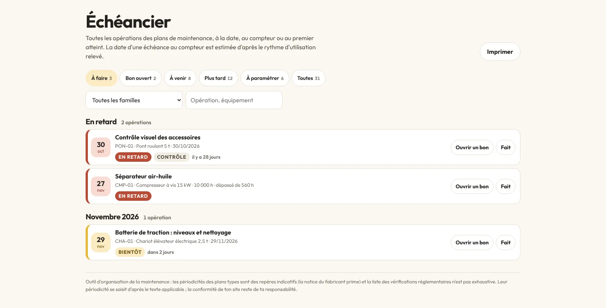
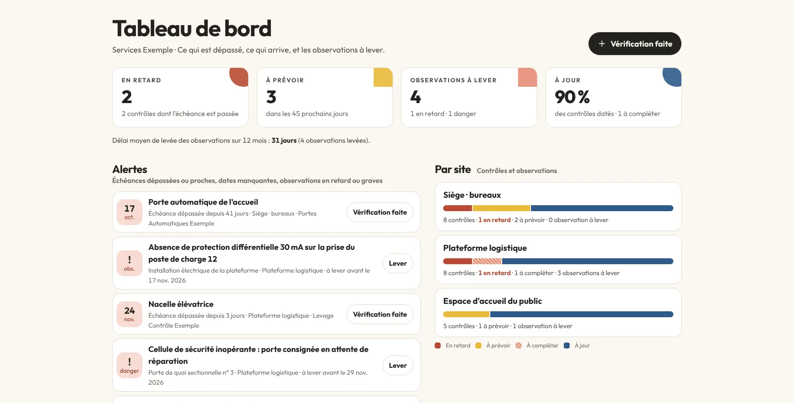
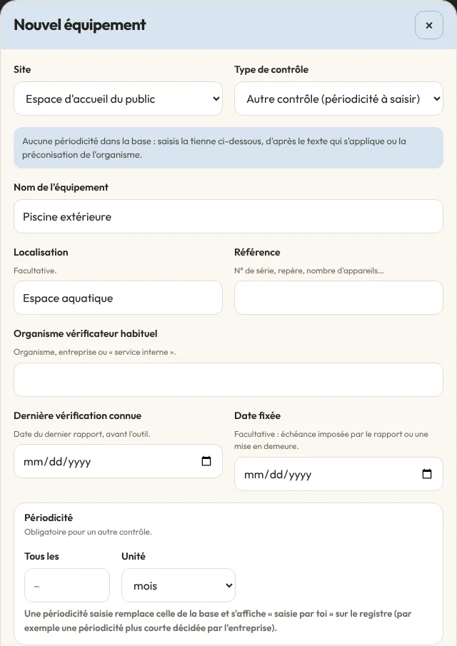
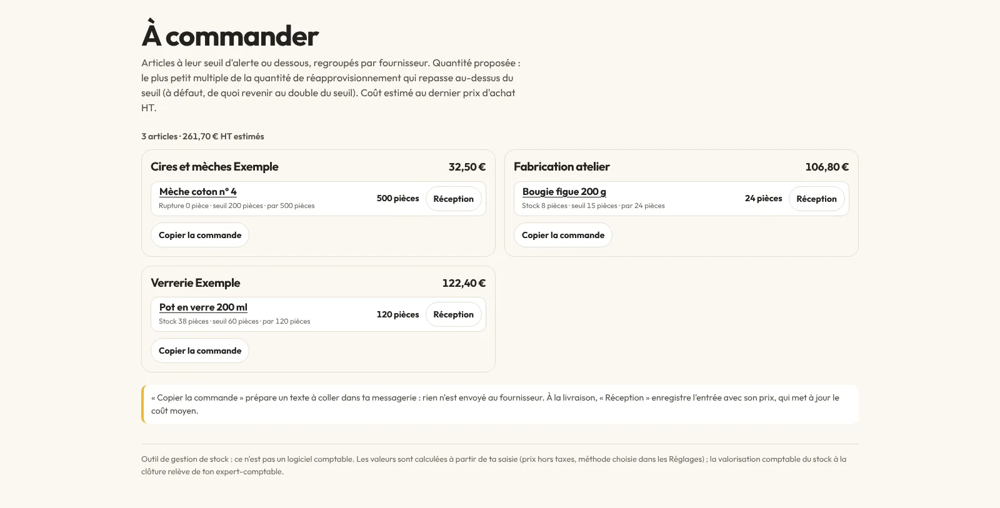
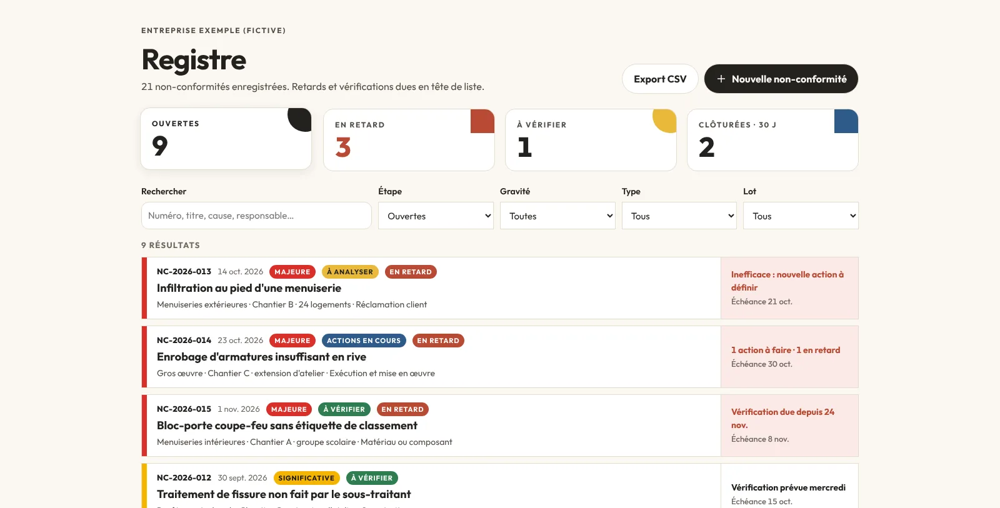

Concept pour les campings · pack prêt à l'emploi
L'ouverture préparée l'hiver, la saison tenue jusqu'au bout.
Quatre outils en ligne déjà prêts pour un camping indépendant : la maintenance des mobil-homes, des chalets et des équipements, les vérifications des bâtiments qui reçoivent du public (accueil, bar, restaurant, sanitaires), les stocks de la boutique et du snack, et les non-conformités relevées en cours de saison. Ils s'utilisent tels quels dès le premier jour, et je peux les adapter sur mesure à votre camping.
Chaque démo ouvre une entreprise fictive (un atelier, des bureaux, une boutique, des chantiers), sans inscription. Elle reste dans votre navigateur et n'envoie rien. Les captures de cette page viennent de ces démos : toutes les données affichées sont fictives.
L'hiver
Les locatifs à remettre en état, les équipements à réviser, les contrôles à programmer avant l'ouverture, les commandes de la boutique et du snack à préparer.
La saison
Une panne de chauffe-eau un samedi d'arrivées, un rapport de vérification introuvable, une rupture au snack, une réclamation qui revient d'une semaine sur l'autre.
Ce que fait le pack
Il met chaque échéance à sa date, signale ce qui approche, garde l'historique et les preuves, et dit ce qu'il faut commander avant qu'il ne manque.
01 · Maintenance préventive
Chaque mobil-home et chaque équipement entretenu à temps
Un équipement par locatif ou par installation (chauffe-eau, climatisation, pompe, tondeuse, véhicule), avec son plan d'entretien à la date, au compteur ou au premier atteint.
- Échéancier : en retard, à faire bientôt, à venir
- Bons d'intervention imprimables, pièces et main-d'œuvre
- Historique et coût de maintenance de chaque locatif

02 · Vérifications réglementaires
Les contrôles des bâtiments recevant du public, à leur date
Accueil, bar, restaurant, sanitaires : un site par bâtiment, un équipement par contrôle, la date du dernier rapport et la prochaine échéance calculée.
- Base intégrée et sourcée (brochure INRS ED 828) : installations électriques, éclairage de sécurité, extincteurs, gaz, grandes cuisines…
- Observations des rapports à lever, avec la preuve
- Registre imprimable par site, export CSV

03 · Piscine et aires de jeux
Ce qui n'est pas dans la base se saisit en « Autre contrôle »
La piscine et les aires de jeux ne font pas partie de la base intégrée des vérifications. Elles se créent en « Autre contrôle (périodicité à saisir) » : vous indiquez vous-même la périodicité, d'après le texte qui s'applique à votre camping ou la préconisation de votre organisme.
- La périodicité saisie est obligatoire, et marquée « saisie par toi » au registre
- Ensuite, même suivi que les autres contrôles : échéance, rapports, observations
- L'outil ne dit pas quels contrôles s'imposent à votre établissement

04 · Stocks et inventaire
La boutique et le snack sans rupture
Chaque article avec son stock calculé par les entrées et les sorties, son seuil d'alerte et son fournisseur.
- Liste à commander, regroupée par fournisseur
- Valeur du stock et articles qui dorment
- Inventaire de fin de saison, écarts corrigés d'un clic

05 · Non-conformités
Une réclamation traitée jusqu'à la cause
Un écart constaté ou une réclamation de client : le constat en trente secondes, la cause, l'action corrective, puis la vérification qu'elle a marché.
- Retards et vérifications dues en tête de liste
- Actions suivies par responsable et par échéance
- Indicateurs pour le bilan de fin de saison

Prêt à l'emploi, ou sur mesure
Les quatre outils sont prêts : ils s'ouvrent en ligne, sur ordinateur, tablette ou téléphone, et vos données sont synchronisées. Ils ne se connectent à aucun logiciel de réservation ni de caisse : vous saisissez, ils calculent les échéances et les alertes. Si votre camping demande autre chose, je le construis pour vous.
Le pack Exploitation et maintenance
95 € au lieu de 119 €, achat unique, sans abonnement ni renouvellement
- Maintenance préventive, Vérifications réglementaires, Stocks et inventaire, Non-conformités
- Chaque outil s'achète aussi seul, de 20 à 39 €
- 14 jours d'essai gratuit avec vos données, sans carte bancaire
La version sur mesure
Adaptée à votre camping
- Vos locatifs, leurs plans d'entretien et l'état des lieux entre deux séjours
- Vos propres grilles de contrôle (piscine, aires de jeux, sanitaires)
- Un suivi par équipe (technique, ménage, boutique) avec vos propres consignes
Les périodicités intégrées citent leur source (brochure INRS ED 828) ; un contrôle absent de la base, comme la piscine ou les aires de jeux, se saisit en « Autre contrôle » avec la périodicité que vous indiquez. Les outils aident à ne rien oublier : ils ne disent pas quels contrôles s'imposent à votre établissement, ce qui reste à vérifier avec les textes et votre organisme. Les démos utilisent des entreprises fictives et ne quittent pas votre navigateur.
Trente minutes pour voir ce qui vous ferait gagner le plus de temps
Ouvrez une démo, puis dites-moi comment vous préparez l'ouverture aujourd'hui : je vous dis franchement si le pack suffit tel quel, ou ce qu'une version sur mesure changerait.